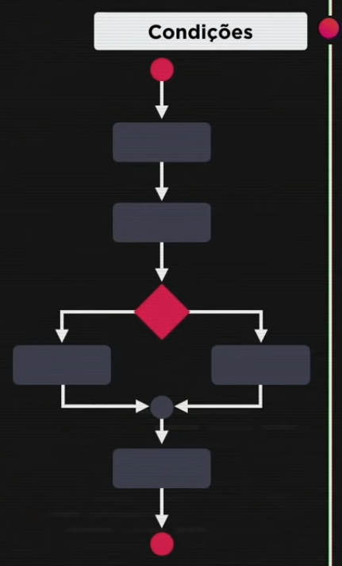
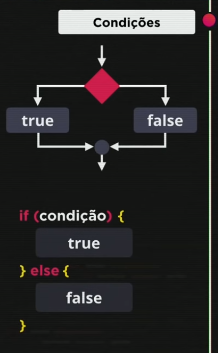

Aula 11 e 12
Condições
No JavaScript, temos vários tipos de condições: Simples, Compostas, Aninhadas e Múltiplas
Sequência
O condicional altera o fluxo do código, a sequência. Dentro da programação essa alteração é chamada de DESVIO CONDICIONAL.
Para construir a estrutura condicional, usamos a palavra reservada if, a condição a ser testada entre parênteses, e o bloco de código a ser executado caso o teste retorne verdadeiro entre chaves {}. Caso a consição retorne falso, utiliza-se o else e mais um bloco de código para este caso.
Tipos de Condição
- Condição simples
- Condição Composta